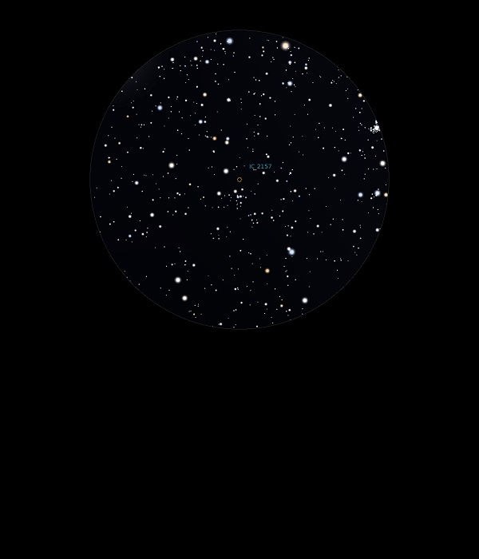

IC 2157
Open Cluster in Gemini
Mag 8.4
25/11/13
The first time I've observed an IC!
A faint and sparse Open Cluster, barely resolved in 25mm but
in a nice open field
08/01/16
Another Open Cluster around M35 and a FOV away in 25mm, this one
is very sparse with a tiny 'Plough like' asterism of stars
around Mag 10.3 to 11.45 at it's core